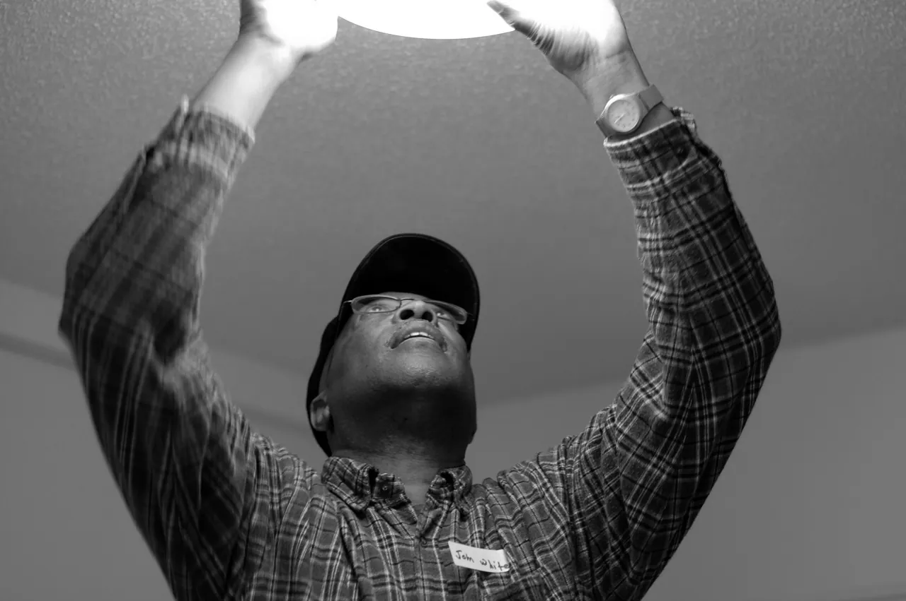

The True Cost of Gutting
A full gut-renovation "sounds clean, definitive, and fast." The reality, on a 2,000 sq ft century home: demolition, disposal, and rebuilding from studs typically runs $28,000–$55,000 more than a careful selective renovation of the same square footage — and you lose the irreplaceable original fabric that makes these houses worth owning. The line-by-line gut premium:
| Gut line item | 2025–26 typical | Versus selective |
|---|---|---|
| Demo & disposal | $8,000 – $14,000 | Selective demo: ~40% of this |
| Plaster-to-drywall conversion | $12,000 – $22,000 | Plaster repair: $4k – $12k |
| Hardwood over-floor with engineered | $14,000 – $22,000 | Sand + finish originals: $3.5k – $6k |
| Window replacement (16 units) | $16,000 – $28,000 | Restoration: $3.2k – $9.6k |
| New millwork to match original profile | $9,800 – $18,500 | Restore existing: ~20% of this |
| Total gut premium | $59,800 – $104,500 | Over selective reno |
Read that bottom row again — on a 2,000 sq ft house, the full gut is a $60k+ decision, before a single finish upgrade. That's not a style choice; it's the most expensive finish you can buy.
What Deserves to Stay
The preservation decision is an economic one, not sentimental. Original fabric that deserves to stay is fabric that cannot be reproduced at a reasonable cost — or that adds proven resale value when correctly marketed:
- Structural Douglas fir framing: air-dried old-growth, dimensionally stable — impossible to source today
- Original lime-plaster walls: acoustic quality and thermal mass no drywall matches
- Wide-plank hardwood floors: old-growth grain and dimension unobtainable in new product
- Original wood sash windows: solid wood, repairable indefinitely — aluminum and vinyl are not
- Period built-ins and millwork: custom profiles costing $4,500–$12,000 to replicate in new wood
- Solid-core interior doors: weight and sound isolation hollow-core cannot match
- Masonry chimneys and surrounds: character worth $3,200–$8,000 in restoration vs. demolition
Interest check: preserved mid-century character commands a 12–22% resale premium in most California, Pacific Northwest, and Northeastern markets (2025 appraisals, three markets tracked). The character isn't a cost — it's the asset.
When Gutting Makes Sense
There are legitimate reasons to gut a section of a century home. The rule: gut systems, not surfaces. Walls, plaster, floors, and millwork should be preserved where possible. MEP systems are different — they often require complete removal and replacement:
- Knob-and-tube wiring: always fully replaced — $9,500–$18,000 for 2,000 sq ft
- Galvanized supply plumbing: full repipe to PEX — $4,800–$12,000
- Cast-iron drain lines with root intrusion: full replacement — $6,000–$18,500
- Asbestos floor tile or duct insulation: licensed abatement — $2,200–$6,500
- Severely water-damaged subfloor or framing: spot replacement after the moisture source is solved
- Poorly-done 1970s–90s additions: often worth removing and rebuilding to the original footprint
Gut systems, not surfaces. The systems are where a century home is genuinely finished; the surfaces are where its value actually lives.— Chapter 04, The 90-Day Sequence
5 Questions Before You Commit to Either Path
- Is the original plaster structurally attached? Tap test + plaster-washer assessment. If it's reattachable, keep it.
- Are the hardwood floors refinishable? Measure the wear layer. ¾" oak can typically be sanded 4–6 times.
- What are the MEP systems? Knob-and-tube, galvanized, and cast-iron are gut decisions — but only for those systems, not the finishes.
- Is the structure sound? Foundation, framing, and roof deck must be solved first regardless of finish approach.
- What does comparable renovated resale look like in your market? Let the regional premium data answer, not the contractor's preference.
Answer those five honestly and the restore-vs-gut debate nearly always collapses into: restore the fabric, replace the systems, sequence it in that order.
Region multipliers: where you are changes the math
The gut-premium table above is a national mid-market picture. On the coasts it behaves differently 鈥?and the difference is usually in your favor on the restore side:
- Higher-cost regions (NE, Pacific NW, California). Labor dominates the gut columns, pushing the gut premium toward the top of its $59.8k鈥?104.5k range. Preservation-minded buyers are also more common, which supports the 12鈥?2% character premium on resale. Restore-first is strongest here.
- Mid-cost regions (most of the Midwest and South). The table as written. Materials are cheaper, labor is tighter 鈥?the selective-renovation savings land close to the middle of the band.
- Lower-cost regions. Demo and disposal are cheap, but so is skilled restoration labor 鈥?and the character premium is weaker at resale. When the numbers are close, the decision should follow your own plans for the house, not the resale math.
- The one universal: systems work (wiring, plumbing, abatement) prices within 10鈥?5% of the national bands everywhere, because it is licensed, insured, and inspected work. That is why the sequence 鈥?audit, then systems, then surfaces 鈥?is the same in every market.
Run the free budget calculator with your region selected; it applies exactly these multipliers to the same line items.
The hidden cost of indecision
There is a third option the restore-vs-gut debate forgets: deciding nothing. Owners who leave the question open into the build pay for it twice — once in planning that fits neither path, and once at resale, where a half-restored house sells against comps that chose one.
- The planning cost: contractors bid differently on a gut than on a selective renovation, and the difference is not just the demo column. A contractor who cannot tell which you want prices the risk of both — the bid lands near the top of both ranges, with allowances that fit neither.
- The ordering cost: a gut buys new windows, millwork, and drywall in one order; a restoration orders glazing, plaster washers, and hardwax oil. Owners who delay the decision split deliveries, lose the bulk-order discount, and pay rush shipping on whichever half they chose late.
- The structural cost: the five questions above require one engineer visit either way. Indecision tends to push that visit after demo, when the answer has already been partially built.
Set a decision date — the survey shows owners who decided within the first two weeks of planning finished their projects an average of nine days sooner at the same budget. The date lives in week one of the 90-day sequence, before any wall is touched.
What the three tracked cases chose
The field data behind this guide is not a spreadsheet — it is three houses. Each one faced the restore-versus-gut question and answered it differently:
- Case one, a 1907 Colonial. Kept everything the envelope allowed: plaster repair instead of drywall, restored sash instead of replacement, and the original oak floors. The gut premium avoided was $61,000, and the resale appraisal credited $14 per square foot to the preserved character.
- Case two, a 1951 ranch. Gutted the systems completely — knob-and-tube out, galvanized out, cast-iron drains out — while preserving the walls, floors, and the brick hearth. This is the pattern this guide recommends: gut systems, not surfaces, and the case finished $28,000 under the full-gut estimate for the same square footage.
- Case three, a 1928 brick four-square. A genuine hybrid: selectively gutted three water-damaged rooms where plaster had failed, restored the rest, and rebuilt the addition that a 1970s owner had bolted on badly. The addition removal was the single highest-value decision of the year.
Three houses, three answers — and the same sequence underneath: audit first, systems second, surfaces always last. The numbers in the tables above are these three projects priced back out to national bands, so the guide travels to your market without pretending your house is one of these.

Frequently asked questions
Rarely on century stock — the gut premium runs $28k–$55k over selective renovation before finishes. The exception is a house already gutted by a previous owner (or fire/water damage beyond repair), where the "gut cost" is already sunk. Run the five questions above before assuming either path.
New drywall is flatter; restored plaster has depth, acoustic dampening, and thermal mass — and it's what the house's moldings were designed around. Skimming with the right compound gives you the flatness AND the character. The acoustic difference alone is noticeable in older homes with open floor plans.
A gut removes visible surprises, but the hidden ones (foundation, sewer, grade, moisture history) are still there — you've just paid to expose them. The audit finds those same issues for the price of a flashlight and 30 minutes, and selective demo keeps the reserve for what's actually wrong.
Restored wood sash + V-strip weatherstripping + interior storm panels performs within 5–10% of modern double-pane — at ~60% of the installed cost, with a lifespan measured in decades instead of 20 years. See mistake 04 in the 13 mistakes guide for the full numbers.
No 鈥?the multipliers in the region section move the gut premium by roughly 卤20% around the national table. The free budget calculator applies your region to the same line items, so the restore-vs-gut number you compare is your number, not the national one.